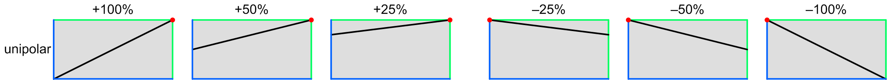
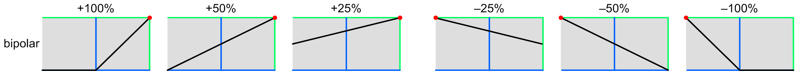
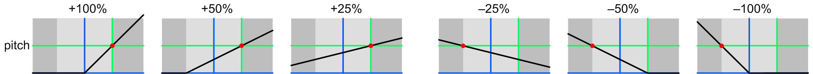

AMPLIFIER post mod depth
These adjust the amount of post modulation that applies to each amplifier's volume. They apply a reduction after the two primary sources (normally envelopes) are added together.
When set to “off”, the post modulation has no effect, and the volume is normal. When set to 50%, most sources can vary the volume from 50% to 100%. When set to 100%, most sources can vary the volume from zero to 100%. When set to a negative value, the modulation reduces the volume across its range, rather than increasing it.
Unipolar modulation
Most mod sources have a 0 to 1 unit range. The following graphs show the response at various positive and negative depths:
|  |
The blue lines represent 0 units of input and output, and the green lines represent 1 unit of input and output. The red dots show where the curve pivots around, which is different for positive and negative depths. (These dots aren’t shown in the graph in the cluster popup.)
Bipolar modulation
Most sweep wave shapes have a ±1 unit range, as does the optional ribbon controller. Since the volume can’t go negative (it is clamped at zero), mod depths outside a ±50% range aren’t useful. However, for ribbon, one might wish to use a ±100% range, and only use half the ribbon, since some ribbon algorithms always start at zero when you touch it, or return to zero when you release it.
|  |
Pitch modulation
The pitch varies from –1 to almost +1 unit across the keyboard, but can go further with octave transposition, and further still via MIDI. The darker regions represent the notes outside the normal keyboard range. As you can see, the most useful settings are lower values, allowing you to introduce a modest variation in volume across the keyboard:
|  |
Toolkit
These are contained in the Amplifier post mod clusters within the Amplifier section.
Chroma panel
These are contained in the VOLUME section of the right panel, under the following parameter number:
They appear in the display as Amp Post Mod Depth.
MIDI
These are accessed via the following NRPNs:
| A | 1,75 | |
| B | 2,75 |
Since these are bipolar parameters, the values are offset by 64.
Values
| MIDI | display | ||
| 0 | –100% | ||
| • • • |
• • • |
||
| 64 | off | (default) | |
| • • • |
• • • |
||
| 127 | +100% | (significant) |